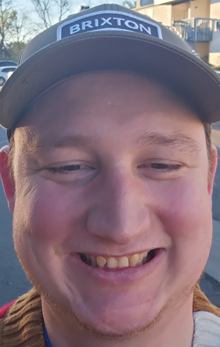

Michael Ross

Contact me
Objective Statement
- I am a newly minted programmer still on my way to greatness!
- Former Military member.
- Getting my name out in the world so I can start to network
Eduacation
- BA in Business (2020-2024 University of Phoenix)
Work experience
- Liberty Military Housing: Service manager (2022-2024)
- Schedule and coordinate vendors for dozens of houses at a time.
- Comunicate with a team of technicians and office workers to establish a schedule for homes to be vacated and repaired.
- USMC: Aviation Ordnance (2018-2022)
- Maintain a constant inventory of millions of dollars worth of product.
- Organize work schedules for a 7 day 24 hr work week with limited resources.
- Lead a team of over 20 individuals in several simultanious operations while maintaining high safety standards.
- Led over 15,000 manhours worth of maintenance and inspections with 0 failures of my signoffs.
- QA school certificate: entailing scrutinous inspections periodically lasting weeks to months worth of detail.
Skills
- Communication
- Able to effectively and concisely give detail and direction in a timely manner.
- Work well under pressure
- Able to organize and execute an operation under strict timelines with zero room for failure.
- Critical thinker
- With limited resources and short deadlines able to effectively troubleshoot and repair over 2000 weapons.
- During flight operations able to communicate to the pilot detailed repair information during a complicated flying manuever to repair the Munitions cpu.
Awards
- Good conduct Medal
- Marine Corps Commendation medal
- Scripted and Compiled Programming Languages Certificate (Undergraduate University of Phoenix)
- QA school through the military (2018-2022)